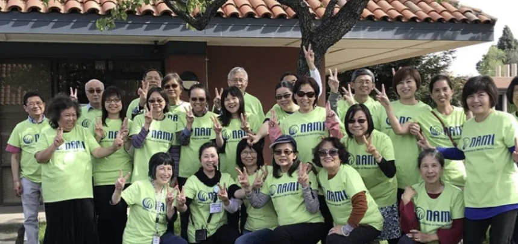
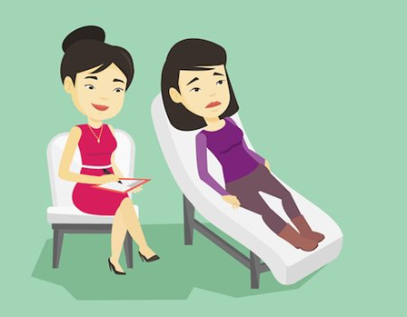

我们的灵感:

在亚洲的社会里，包括中国社会，大家倾向忽视心理健康的问题。大多数的华人觉得找心理健康帮助不是一件光彩的事情，遇到问题较不容易主动寻求协助 但是， 我们所提供的暖屋在线服务，可以让需要的人，在不与人接触的情况下，抒发自己内心想要表达的话。
我们的软件如何与 MHACC 合作，为心理健康提供扩展支持：
这个网站里，我们会有链接，可以让使用者转介到MHACC的网站，以協助MHACC宣传他们所提供的资源 。这个办法会让我们宣传MHACC的resources。 我们网站会帮user转到比如MHACC的暖线，或者转到他们的申请小组的地方。我们这网站会像个心理健康的先锋者让患友更容易得到专业的协助。
中国心理热潮:

在WPI CN357X Contemporary China当代中国这门课中，老师给我们看了一个 “Psycho Boom”的视频。视频里我们看见一个有自杀念头的一个人，在空荡荡的人行道上，听见救护车的声音。看到这种场面谁都会开始问自己我们能做些什么。视频里也提到了中国心理健康专业人士的短缺。平均每十万人，才有一位心理专业人士能提供咨询服务。视频里我们也看到个对心理健康有兴趣的澄海男的 ，虽然他不是一位心理专业人士 。他还是 仍然希望通过自己帮助有需要的人 。我们成立暖屋的目的，是为了帮助更多需要心理援助的朋友找到资源和协助.
精神健康的污名化:

在中国社会，集体主义的思维根植于历史和文化传统。这种观念强调家庭和社群的重要性，使个体愿意将家人和社会的需求置于自身之前。这集体主义的观念可以追溯到孔夫子的思想，在过去经济相对匮乏的时期，中国父母和老人习惯将有限的资源优先分配给家庭成员，以确保家族的延续。种家庭观念在中国社会根深蒂固，但是也导致了对个体心理健康问题的忽视。
中国社会普遍存在着对心理健康问题的沉默和排斥。由于担心社会歧视和面子问题，许多人不愿公开谈论自己的心理状况。有一句流行的俗语 ，“家丑不外扬”，强调了在社会中保持家庭问题的私密性。这使得个体在面对心理健康问题时往往选择隐忍，而不是寻求专业的帮助，从而可能导致问题的长期积累和不良后果。

在亚裔文化中，尤其是中国文化 里，对于心理健康问题的忽视与传统的家庭责任感密切相关。亚裔人往往以稳固来照顾家庭为己任，因此忽视了个人的心理健康问题，“一旦心理健康出现问题”，便使他们无法履行家庭责任，从而被视为失败者，失去了自我价值。亚裔文化中也流传着“家丑不外扬”的观念，特别是对于男性而言，公开谈论家庭问题被视为没面子，可能招致嘲笑。

MHACC 是什么？
美国华裔精神健康联盟 的使命，是通过宣传、教育 提高华人社区对心里健康的认识，帮这个华人的家庭和心里有病个人帮他们快点儿康复，这样他们就可以过一个好的生活。
他们怎么做成他们的使命？
为了达成这个使命，美国华裔精神健康联盟 通过多 面性的活动和服务，和放些讲座、他们也提供工作坊，他们也有一个网站。 在这个网站上他们有很多选项。 想个暖线, 程式，互助小组和支持小组。这个组织这两个小组是给不同的人来用。互助小组是给病友来用。支持小组是个照护者。他们都有一个功能可以帮你转介到免费或者便宜的医生.
程式:
MHACC对这些两个小组也开了两个手机软件。‘Misunshine’ 和’Urspace’。这两个手机软件是免费用的，也很容易装。Misunshine是给照护者使用的，Urspace是给同行者使用的。这些都有助于人们的心理健康。我推荐！
支持小组:
MHACC 提供互助小组和支持小组。
互助小组旨在让面临相似情况的人们共同支持彼此。MHACC提供多语言的互助小组，包括英文、普通话和广东话。
支持小组是给照顾护者用的。这个小组的目标是不同家的照顾护者可以在一起找更好方式来帮他们的客户来拒绝他们的心理问题。
专业帮助:
MHACC提供专业的心理健康支持，与PhyscologyToday合作，在MHACC的网站上为华人社区提供链接，方便找到说英文和普通话的精神科医生以及说普通话和广东话的心理治疗师 。
此外，MHACC与NAMI （National Alliance on Mental Illness）项目合作，为成年人提供保密 且安全的支持小组，帮助患友面对自己的精神健康。专业培训的引导者将在充满尊重、理解、鼓励和希望的环境中引导个体增强自己。
MHACC还提供居家支援服务（IHSS），为年满65或有残疾、视障人士，提供个性化关怀，让他们能够在家中得到所需的支持。IHSS也支持家庭照顾者，减轻其照护压力，确保他们所爱的人 也同时照顾到自己。
与CalHOPE (California Hope) 的合作方面 包括提供暖线服务、转介联系心理专业人士、提供心理健康教育、以及安全的咨询、支援环境 。为社区成员提供全方位的心理支持。
此外，MHACC与Mental Health First Aid 合作，通过多次“心理急救培训”帮助社区居民更多了解心理健康，提高应对/预防紧急情况的能力。这些培训使更多人成为自己所爱之人的“心理健康守护者” 。
继续学习的资源: